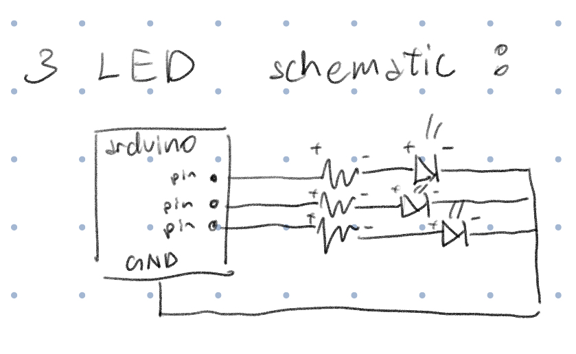
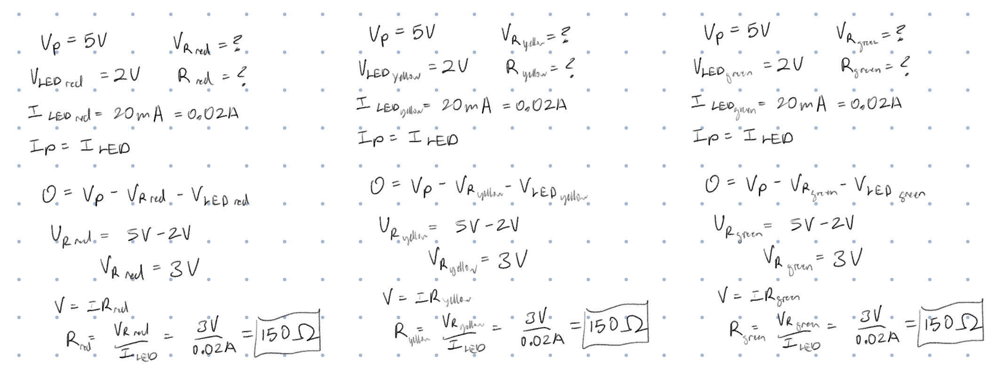
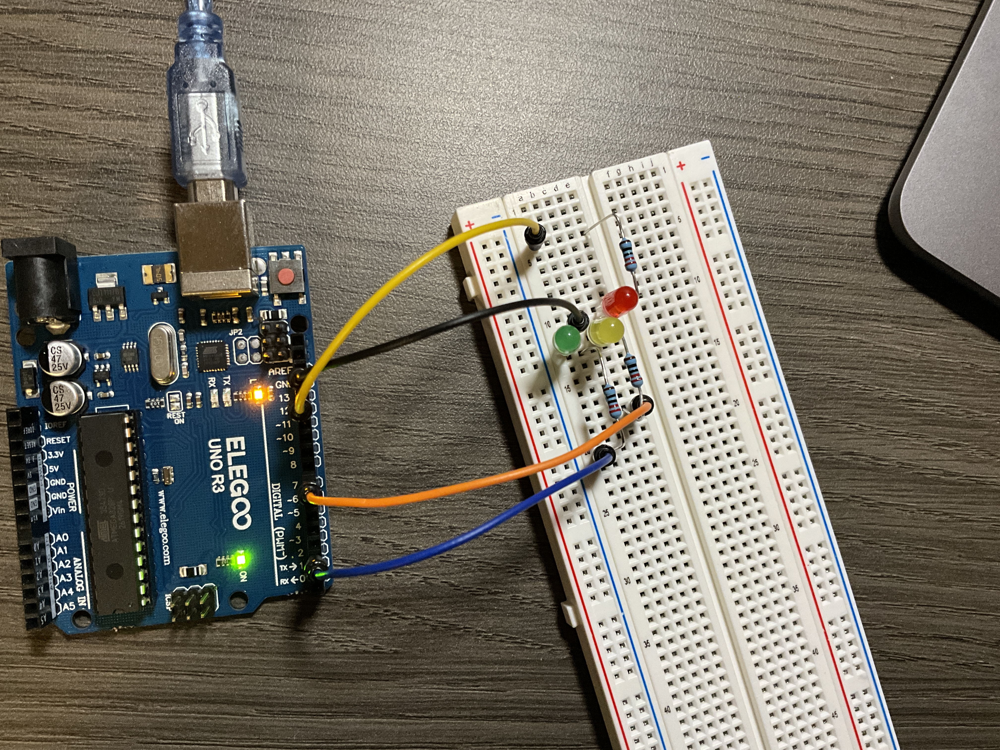
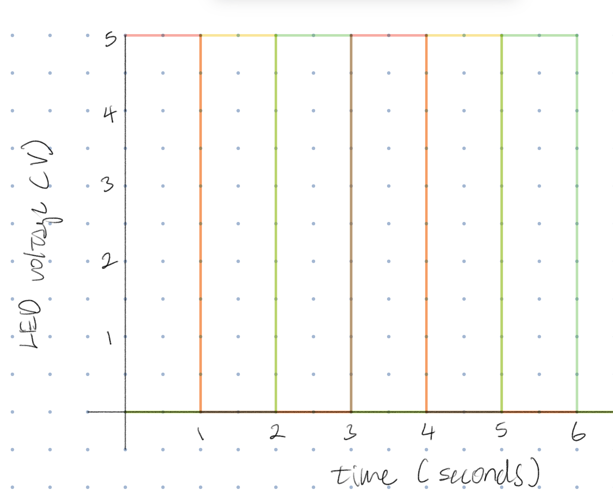

Here is all the documentation for assignment 1!
Here is all the documentation for assignment 1!

This is the schematic I drew for this assignment. It has 3 resistors and 3 LEDs that run independently.

To calculate the value of the resistor, I used Ohm's and Kirchhoff's laws. The arduino board has an output of 5V and the LEDs, although different colors, have the same voltage of 2V. Once I got the resistor voltage, I filled in Ohm's law to get a resistor value of 150 ohms. However, since I didn't have a 150 ohm resistor, I went higher and used a 220 ohm resistor instead.

This is the circuit board I put together. The LEDs negative ends are connected on the same node, which is then connected to the ground with a jumper wire.
// the setup function runs once when you press reset or power the board
void setup() {
// initialize digital pin 12 as an output (red LED).
pinMode(12, OUTPUT);
// initialize digital pin 7 as an output (yellow LED).
pinMode(7, OUTPUT);
// initialize digital pin 2 as an output (green LED).
pinMode(2, OUTPUT);
}
// the loop function runs over and over again forever
void loop() {
//turns pin 12 (red LED) on
digitalWrite(12, HIGH);
//turns pin 7 (yellow LED) off
digitalWrite(7, LOW);
//turns pin 2 (green LED) off
digitalWrite(2, LOW);
//lets pin 12 (red LED) be on for 1 second
delay(1000);
//turns pin 12 (red LED) off
digitalWrite(12, LOW);
//turns pin 7 (yellow LED) on
digitalWrite(7, HIGH);
//turns pin 2 (green LED) off
digitalWrite(2, LOW);
//lets pin 7 (yellow LED) be on for 1 second
delay(1000);
//turns pin 12 (red LED) off
digitalWrite(12, LOW);
//turns pin 7 (yellow LED) off
digitalWrite(7, LOW);
//turns pin 2 (green LED) on
digitalWrite(2, HIGH);
//lets pin 2 (green LED) be on for 1 second
delay(1000);
}
As shown in the GIF above, the LEDs are blinking in 1 second intervals. Starting from red to yellow to green, like a traffic light.

The different colored lines, take turns being powered by 5 volts for 1 second.
I blinked 3 LEDs independently with my Arduino. Since they are independent, it only draws 5 volts.
5 milliseconds. I was cutting the time between the blinking LEDS in half, starting from 1000, until I reached 25 milliseconds, which I then decided to divide by 5 to get 5 milliseconds.
No, I did not use any AI in this assignment.